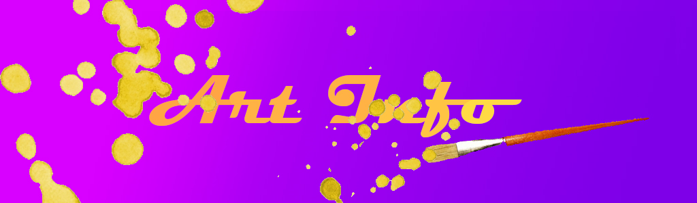

The Dutch painter, Vincent van Gogh is definitely one of the 1st that comes to people's minds when someone asks who is in the top #3 list for the most famous artists in the world. Actually, Vincent van Gogh is probably the most famous artist in his and our time, mostly well-known in the old western artistry. His works were the most expensive paintings to have ever sold at auction houses. With that said, Vincent has pleasantly created thousands of amazing oil paints that are still displayed in our museums today ( Even, having a large museum named in his honor.) such as "Starry Night", an oil painting of a view from his asylum window ( He had also added a village at the bottom for a affect.) and "Wheat Field with Cypresses". He has also created a lot of self portraits ( Over 43 portraits, as far as we counted.) of himself like "Self portrait Without Beard", a last portrait he did of himself that he had given to his mother as a gift for her birthday and did portraits of other people he knew such as, "Portrait of the Postman Joseph Roulin".
Vincent ( "Vincent was a common name in the Van Gogh family: his grandfather, Vincent (1789–1874), who received a degree in theology at the University of Leiden in 1811, had six sons, three of whom became art dealers. This Vincent may have been named after his own great-uncle, a sculptor" - wikipedia for Vincent van Gogh). grew up quiet and straightforward in an upper-middle class, Dutch re-formed family. He was the oldest in the family and was the son of Theodorus van Gogh, a minister of the Dutch re-formed Church, and Anna Cornelia Carbentus. He quickly picked up painting in 1881, growing from being a common, traveling art dealer to one of the most popular artists ever to exist. His younger brother Theo, ( Whom he always writes letters too) was the one who made him consider taking up art as a career in the 1st place. However, his paintings were only turned to the public eye after his early death. Before, his death he was a man who suffered not only from depression but, also intense delusions. He continuously moved from psychiatric hospitals until he dischanged himself from the hospital's care completely. The public, including his neighbors, viewed Vincent as a "madman and a failure". A total nobody who wouldn't make it and in a way, they were right. Vincent von Gogh successfully commited suicide on July 27th, 1890 in Auberge Ravoux with a revolver. He shot himself a few times in his chest and died from his wounds 2 days later while resting in the hospital.
{kind=link}